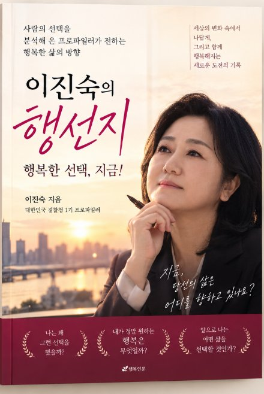

JIN SOOK LEE
PROFILING INSTITUTE
프로파일러 이진숙의
행선지
행복한 선택, 지금
이진숙 프로파일링 연구소는
마음의 근육을 키워,
더 넓은 세상으로 나가는 문門
네 개의 문
어느 문으로 들어가시겠어요?
필요한 서비스를 고르면 해당 내용과 신청 방법으로 바로 안내합니다.
 01 · MINDAI 연출 이미지
01 · MINDAI 연출 이미지프로파일링
왜 그렇게 말하고 행동하는가?형사사건 프로파일링보고서로 행동의 이유를 설명하고, 셀프 프로파일링으로 나를 읽습니다.
프로파일링 보기 → 02 · FACTAI 연출 이미지진술분석 SIAS
무엇이 사실인가?진술·녹취·메시지에서 사실과 감정, 의도의 흔적을 분리해 읽습니다.
진술분석 보기 → 03 · CHANGEAI 연출 이미지
03 · CHANGEAI 연출 이미지심리검사·상담
나는 어떤 사람이고, 어떻게 변할 것인가?9가지 심리검사로 지금의 나를 확인하고 1:1 전문가 상담으로 이어갑니다.
검사·상담 보기 → 04 · 방송AI 연출 이미지
04 · 방송AI 연출 이미지교육·강연
사람을 읽는 기술을 조직에기업·공공기관 강연, 방송·언론 출연, 프로파일링 아카데미.
교육·강연 보기 →이진숙의 행선지
행복한 선택, 지금
마음이 풀어지면, 사람이 보입니다.
그리고 행복한 선택이 시작됩니다.— 이진숙
책 『이진숙의 행선지 — 행복한 선택, 지금!』 출판사·출간일 — 확인 후
사람을 이해하는 마음, 행복한 내일을 여는 연구소.
문을 열고 들어오시면, 이진숙 소장이 행복한 선택으로 가는 길을 함께 찾습니다.

표지 시안- 공감사람을 이해하는 힘
- 프로파일링마음을 읽는 통찰
- 소통관계를 여는 열쇠
- 행복한 선택더 나은 나, 더 나은 삶
최근 소식
글과 영상으로 만나는
이진숙의 시선
상담·의뢰
지금 어떤 문제를
해결하고 싶으신가요?
지금 상황에 가장 가까운 항목을 고르면 맞는 서비스로 안내하고, 보낼 문의 내용을 함께 정리해 드립니다.